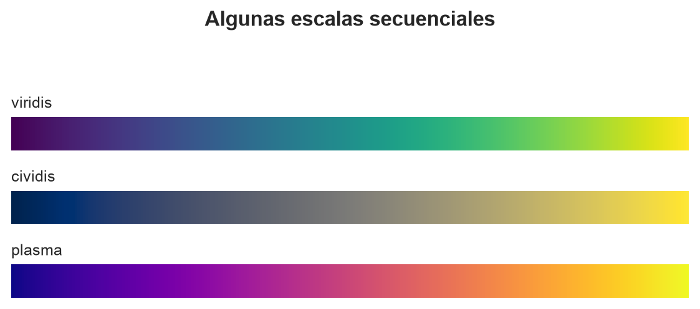
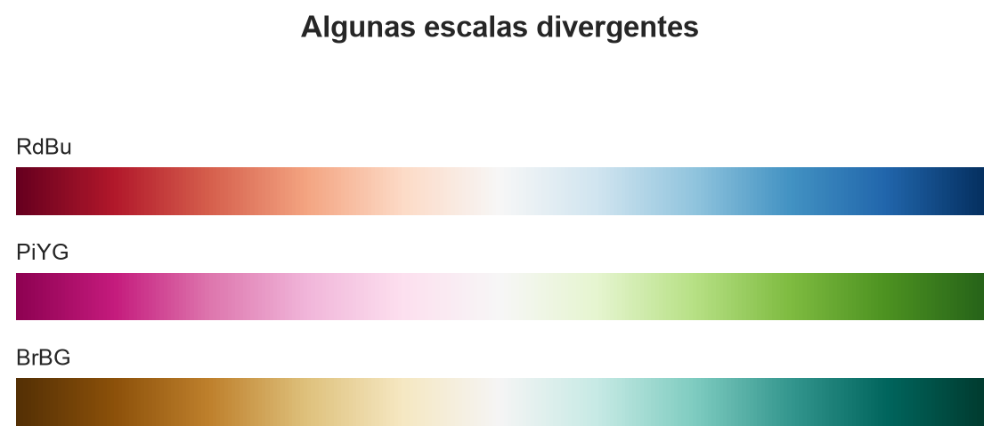
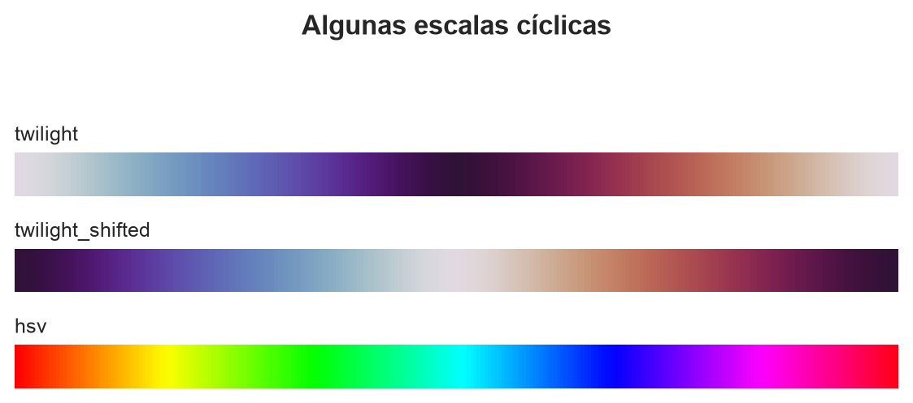
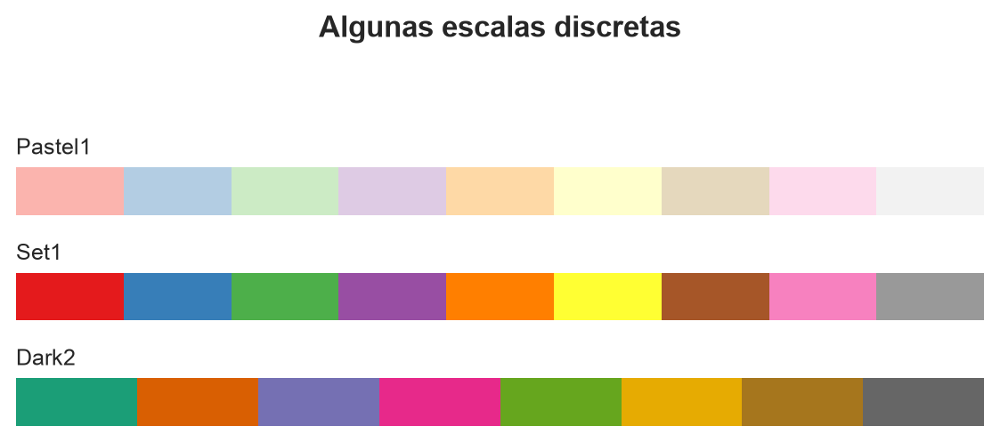

flowchart LR T["Selector temporal"] --> F["Frame activo"] F --> P["Planta"] F --> E["Corte Este"] F --> N["Corte Norte"] F --> V["Vista 3D"] F --> H["Altura"] F --> G["Granulometría"]
10. Visor 3D, animación y producto analítico
Cómo convertir estados densos en una experiencia interactiva con React, Canvas y SVG.
El producto final como motor de visualización 3D
El producto final de un proyecto como éste no puede ser estático: Debe permitir la interacción, la exploración de diferentes perspectivas y la comprensión dinámica de los datos a lo largo del tiempo. Además, debe permitir visualizar la evolución de los ratholes y otros fenómenos relevantes en el stockpile, cuya identificación en terreno es fundamentalmente visual.
La visualización 3D interactiva permite a los usuarios explorar el stockpile desde diferentes ángulos, observar cambios a lo largo del tiempo y comprender mejor la dinámica del material. En términos estructurales, la constitución del reporte final sigue la lógica de un tablero de control, donde cada componente visual está coordinado y responde a la interacción del usuario, conforme el siguiente diseño, tal y como se muestra en la Figura 1.
La evolución del stockpile se rastrea simultáneamente en la vista 3D y las correspondientes vistas 2D, asegurando que cualquier cambio en un plano se refleje en los demás. La coordinación es más importante en este diseño que el número de controles disponibles, ya que permite relacionar la información de diferentes perspectivas y comprender mejor la dinámica del material.
Stack tecnológico y composición
ImportantHonestidad ante todo…
Mi experiencia en los últimos diez años se resume en una carrera fuertemente orientada a la construcción de productos digitales basados en datos, con fuerte enfoque en machine learning y análisis avanzado de información. La visualización de datos es parte integral de mi trabajo, ya que permite interpretar y comunicar los resultados de manera efectiva. Sin embargo, en las próximas líneas sobrepasaremos esa frontera y entraremos en un terreno no muy propio de mi expertise profesional: El desarrollo web.
En lo personal, no soy en absoluto un experto en desarrollo web. Más bien soy un humilde principiante que recién este año ha empezado a explorar estos contenidos, con alta dificultad, puesto que los lenguajes de programación que gobiernan este dominio son, comúnmente, orientados a objetos. Python también es un lenguaje de este tipo, pero permite igualmente ser puramente funcional, que es mi caso, por un asunto filosófico y de abstracción muy personal. En definitiva, no me siento cómodo trabajando en interfaces web.
Hoy en día, los aceleradores de IA nos permiten levantar interfaces con unas pocas instrucciones. Sin embargo, construirn código productivo y mantenible no es tan fácil, incluso contando con estas herramientas. A juicio muy personal, esto sólo deja un camino seguro: Aprender aquello que no conocemos. Por mucha IA que aparezca en el camino.
El laboratorio se construye sobre tres piezas que cumplen funciones diferentes: TypeScript define la forma que deben tener los datos, React coordina la interfaz y Canvas dibuja las vistas que cambian con cada cuadro. Para comprender por qué las necesitamos, conviene partir por el lenguaje que ejecuta el navegador.
JavaScript es el lenguaje de programación que permite responder a un clic, actualizar un texto, solicitar un archivo o volver a dibujar una figura sin recargar la página. Es flexible, pero esa flexibilidad puede esconder errores. Si una función espera una matriz de alturas y recibe accidentalmente una fecha, JavaScript intentará continuar hasta que alguna operación resulte imposible. En una aplicación científica, descubrir esa confusión cuando el visor ya está ejecutándose es demasiado tarde.
TypeScript extiende JavaScript con un sistema de tipos. Un tipo es una declaración previa acerca de la forma de un dato: Permite indicar, por ejemplo, que una altura es numérica, que un alimentador posee coordenadas o que un cuadro contiene seis arreglos de enteros. Antes de producir la aplicación, el compilador revisa esas declaraciones y advierte incompatibilidades. Después elimina las anotaciones de tipo y genera JavaScript convencional, que es lo que finalmente entiende el navegador. Los archivos terminados en .ts contienen TypeScript; cuando además incluyen elementos visuales de React se usa la extensión .tsx.
React es una librería para construir interfaces a partir de componentes. Un componente es una pieza autocontenida de la página, como el reproductor temporal, el visor 3D o un gráfico de reconciliación. En vez de dar instrucciones manuales para modificar cada elemento de la pantalla, describimos qué debería verse para un estado determinado. Cuando cambia ese estado, React actualiza las partes afectadas. Este estilo se denomina declarativo: Expresamos el resultado deseado y dejamos que la librería gestione la actualización del documento.
La sintaxis utilizada para describir esa interfaz se llama JSX. Se parece a HTML, pero vive dentro del programa y permite insertar valores mediante llaves. React no interpreta literalmente un bloque HTML escrito dentro de JavaScript; el compilador transforma JSX en llamadas que crean y actualizan componentes. Esta diferencia permite combinar estructura, datos e interacción conservando las reglas del lenguaje.
Finalmente, Canvas es una superficie rectangular de píxeles incluida en HTML. El programa obtiene un contexto de dibujo y le ordena trazar polígonos, líneas, texto o rectángulos. Al contrario de un gráfico compuesto por elementos independientes del documento, el navegador no recuerda que cierto grupo de píxeles representa una celda: Si el estado cambia, hay que limpiar y volver a pintar la escena. Esa característica lo hace menos descriptivo, pero muy eficiente para los miles de prismas y celdas que cambian durante la animación. Los gráficos con pocas curvas, ejes y etiquetas se construyen con SVG, un formato vectorial donde cada línea o texto sí permanece como un objeto identificable del documento.
El flujo completo se resume en la Figura 2. Los archivos diarios contienen los cuadros, mientras un índice JSON, un documento de texto organizado mediante nombres y valores con estructura similar a la de un diccionario, describe cómo interpretarlos. Ambos ingresan a frames.ts, un módulo, es decir, un archivo que agrupa funciones y definiciones relacionadas; en este caso, la carga y decodificación. El archivo App.tsx contiene el componente principal que conserva el estado compartido; desde allí los datos pasan a componentes especializados y terminan en app/index.html, el documento HTML que el navegador abre como entrada al laboratorio. Canvas, SVG y los controles HTML componen juntos esa salida final.
flowchart LR
subgraph DATA["Datos publicados"]
IDX["Índice JSON"]
BIN["Cuadros binarios"]
SER["Series de reconciliación"]
end
LOAD["frames.ts<br/>Carga y decodificación"]
APP["App.tsx<br/>Estado compartido"]
subgraph COMPONENTS["Componentes React"]
PLAY["Playback<br/>Rango y reproducción"]
VIEW3D["Stockpile3D<br/>Escena tridimensional"]
VIEWS2D["OrthogonalView<br/>Planta y cortes"]
HEIGHT["HeightReconciliation<br/>Altura"]
SIZE["SizeReconciliation<br/>Granulometría"]
end
OUTPUT["Laboratorio digital<br/>app/index.html"]
IDX --> LOAD
BIN --> LOAD
SER --> LOAD
LOAD --> APP
APP --> PLAY
APP --> VIEW3D
APP --> VIEWS2D
APP --> HEIGHT
APP --> SIZE
PLAY --> OUTPUT
VIEW3D --> OUTPUT
VIEWS2D --> OUTPUT
HEIGHT --> OUTPUT
SIZE --> OUTPUT
classDef data fill:#4b1f45,stroke:#d65db1,color:#ffffff,stroke-width:2px
classDef logic fill:#15343b,stroke:#55c7d5,color:#ffffff,stroke-width:2px
classDef component fill:#263a54,stroke:#91a9ff,color:#ffffff,stroke-width:2px
classDef output fill:#324a32,stroke:#a8d08d,color:#ffffff,stroke-width:2px
style DATA fill:#626f79,stroke:#46525c,color:#ffffff
style COMPONENTS fill:#626f79,stroke:#46525c,color:#ffffff
class IDX,BIN,SER data
class LOAD,APP logic
class PLAY,VIEW3D,VIEWS2D,HEIGHT,SIZE component
class OUTPUT output
El primer fragmento muestra cómo TypeScript documenta un cuadro antes de que exista cualquier dibujo. La palabra interface define un contrato: Todo objeto considerado como Frame debe contener esas seis propiedades. Los dos puntos separan el nombre de una propiedad de su tipo. Uint16Array es un arreglo tipado de enteros de 16 bits sin signo: Todos sus elementos son números enteros entre 0 y 65.535 y ocupan exactamente dos bytes. Esta representación compacta resulta apropiada para almacenar miles de celdas.
interface Frame {
height: Uint16Array;
columnSize: Uint16Array;
sectionEastSize: Uint16Array;
sectionEastFill: Uint16Array;
sectionNorthSize: Uint16Array;
sectionNorthFill: Uint16Array;
}
interface ViewerProps {
index: FramesIndex;
range: LoadedRange;
}La segunda interfaz define las propiedades, abreviadas habitualmente como props, que recibirá el componente principal. FramesIndex describe la geometría y los días disponibles; LoadedRange reúne los cuadros del intervalo que el lector decidió cargar. Si intentáramos crear el visor sin una de estas piezas, TypeScript lo señalaría durante la compilación.
El siguiente bloque presenta una versión reducida del componente React. La anotación : JSX.Element declara que la función devolverá una pieza de interfaz. useState(0) crea una variable de estado llamada frameIndex, inicializada en cero, y una función setFrameIndex() para modificarla. Un índice es simplemente la posición de un elemento dentro de una colección; como JavaScript comienza a contar desde cero, frameIndex = 0 identifica el primer cuadro. Las etiquetas que empiezan con mayúscula —Stockpile3D, OrthogonalView y Playback— no son etiquetas HTML: Son otros componentes React. Los valores entre llaves se calculan en JavaScript y se entregan como propiedades al componente correspondiente.
function Viewer({ index, range }: ViewerProps): JSX.Element {
const [frameIndex, setFrameIndex] = useState(0);
const frame = range.frames[frameIndex];
if (!frame) {
return <p>No hay un cuadro disponible para este instante.</p>;
}
return (
<main>
<Stockpile3D index={index} frame={frame} />
<OrthogonalView index={index} frame={frame} plane="plan" />
<HeightReconciliation range={range} frameIndex={frameIndex} />
<Playback
frameIndex={frameIndex}
onFrameChange={setFrameIndex}
/>
</main>
);
}La expresión range.frames[frameIndex] accede al arreglo frames contenido en el rango y selecciona la posición activa. El bloque if (!frame) cubre el caso en que esa posición no exista y devuelve un mensaje en lugar de intentar dibujar datos ausentes. Después, return (...) describe la interfaz correspondiente al caso válido.
Aquí aparece la idea que gobierna toda la aplicación: Los componentes no buscan por separado qué momento deben mostrar. El componente padre selecciona un único cuadro y se lo entrega a todos. Cuando Playback llama a setFrameIndex(), React vuelve a evaluar Viewer; el nuevo cuadro desciende hacia la escena 3D, la planta y la reconciliación. Este flujo unidireccional reduce la posibilidad de que dos paneles terminen representando instantes diferentes.
Proyección orbital de la cámara
La proyección orbital de la cámara permite visualizar un objeto 3D desde diferentes ángulos, simulando que la cámara orbita alrededor del objeto. Esto se logra mediante la rotación de las coordenadas del objeto en torno a un punto de referencia, generalmente el centro del objeto, utilizando ángulos de azimut y elevación. Si designamos tales ángulos como \(\theta\) y \(\phi\), respectivamente, la transformación de un punto \((x,y,z)\) del objeto se realiza mediante las siguientes rotaciones:
\[ \begin{array}{l}r=x\cos \left( \theta \right) +y\sin \left( \theta \right) \quad \wedge \quad f=-x\sin \left( \theta \right) +y\cos \left( \theta \right)\\ x_{\mathrm{screen}}=x_{0}+sr\quad \wedge \quad y_{\mathrm{screen}}=y_{0}+s\left( f\sin \left( \phi \right) -z\cos \left( \phi \right) \right)\end{array} \]
donde \(s\) es un factor de escala que determina el tamaño de la proyección en la pantalla, y \((x_0, y_0)\) es el punto de referencia en la pantalla donde se centra la proyección. Cada columna de la matriz de rotación corresponde a una transformación elemental que, combinada, permite simular la órbita de la cámara alrededor del objeto.
NoteEl algoritmo del pintor
Cuando construimos visualizaciones en 3D, es fundamental determinar qué elementos deben dibujarse primero para simular correctamente la profundidad. El algoritmo del pintor es una técnica que consiste en dibujar los objetos desde el más lejano hasta el más cercano, asegurando que los objetos más cercanos tapen a los más lejanos, de manera similar a cómo un pintor pinta primero el fondo y luego los elementos en primer plano. Se trata de una de las técnicas más utilizadas en gráficos por computadora para manejar la visibilidad de los objetos en escenas tridimensionales.
Interacción orbital
Al interactuar con el visor 3D, el arrastre del ratón permite rotar la cámara alrededor del objeto mostrado, actualizando los ángulos de azimut y elevación en tiempo real. Esto proporciona una sensación de control intuitivo sobre la perspectiva de visualización, simulando que el usuario está moviendo la cámara alrededor del objeto en lugar de mover el objeto mismo. El uso de combinaciones de teclas Ctrl (Windows) o Cmd (Mac OS) y la rueda del ratón permite ajustar el zoom y la posición de la cámara de manera precisa y eficiente, sin confundir el scrolling de la página con la interacción en el visor.
Los botones de zoom y restablecimiento permiten al usuario ajustar la vista sin necesidad de usar el ratón. Esto es especialmente útil para accesibilidad y para usuarios que prefieren controles explícitos en lugar de gestos de arrastre y rueda.
Uso del color
El color en la visualización de la retícula tridimensional permite codificar información relevante sobre las propiedades de cada celda, como el tamaño de las partículas o la densidad del material. En este proyecto en particular, el color representa la granulometría del material, representada por medio del correspondiente \(P_{80}\). Para dar una interpretación correcta, se utiliza una escala de color de tipo secuencial o convergente, que varía de manera continua según el valor de \(P_{80}\), facilitando la identificación visual de las diferencias en la granulometría entre las distintas celdas.
El producto distingue la conversión entre pulgadas y milímetros, asegurando que las visualizaciones y las leyendas reflejen correctamente la unidad seleccionada sin alterar los datos internos. Debido a que esta transformación es afín, solo afecta la escala y la posición de los elementos en la presentación, manteniendo la consistencia de los datos subyacentes.
NoteEscalas de color
Las escalas de color en la visualización de datos suelen dividirse en secuenciales, divergentes, cíclicas y discretas. No todas las escalas son adecuadas para todos los tipos de datos; la elección correcta depende de la naturaleza de la información que se desea comunicar y de cómo se espera que el usuario interprete los colores.
- Una escala secuencial varía de manera continua de un color claro a un color oscuro, representando un rango de valores de menor a mayor. Es muy sencillo reconocer estas escalas al pasarlas a una escala de grises, ya que varían siempre desde un polo claro a un polo oscuro.
- Una escala divergente utiliza dos colores contrastantes que se encuentran en los extremos del rango de valores, con un color neutro en el punto central. Este tipo de escala es útil para resaltar desviaciones respecto a un valor de referencia, como la media o la mediana, o bien, a un valor central específico que se desea destacar. Ejemplos de estos rangos son las correlaciones y las diferencias respecto a un valor esperado. Al pasar una escala divergente a una escala de grises, se observa un gradiente que va de oscuro a claro y luego a oscuro nuevamente, reflejando la simetría respecto al punto central.
- Una escala cíclica es adecuada para datos que tienen un patrón repetitivo, como ángulos o tiempo del día. Los colores se repiten de manera continua, facilitando la identificación de ciclos y patrones periódicos.
- Una escala discreta utiliza un conjunto limitado de colores distintos para representar categorías o grupos específicos. Es útil cuando los datos no son continuos y se desea diferenciar claramente entre diferentes clases o categorías.
Para comparar algunas alternativas utilizaremos Matplotlib. En particular, mostraremos tres escalas de cada familia:




La elección óptima de una escala es una habilidad que suele desarrollarse con la experiencia y el conocimiento de la naturaleza de los datos y del mensaje que se desea comunicar. No es algo que pueda determinarse de manera absoluta sin considerar el contexto específico.
¿Por qué mostramos, como máximo, una secuencia de 14 días?
Al seleccionar un período de tiempo para observar la progresión del comportamiento del stockpile, es importante equilibrar la cantidad de información visualizada con la capacidad del usuario para procesarla. Mostrar demasiados días a la vez puede resultar abrumador y dificultar la identificación de patrones operacionales, mientras que un rango demasiado corto podría no capturar ciclos completos de operación. Por ello, se establece un límite de 14 días como máximo, lo que permite una visualización clara y manejable de los datos.
Para ilustrar este efecto, consideremos la granularidad de los datos de entrada, que es una fila cada 15 minutos. De esta manera, cada día contiene 96 cuadros (24 horas \(\times\) 4 cuadros por hora), y catorce días suman 1344 cuadros, lo que representa un volumen manejable de información para la visualización y el análisis.
Escenario visual público
El laboratorio no pretende ser una captura estática del resultado ni una maqueta que repite una animación preparada de antemano. Es un reproductor de estados: Recibe la salida del autómata, interpreta cada instante y coordina todas las vistas a partir de una única posición temporal. La edición pública contiene 61 días de operación representados en intervalos de quince minutos sobre una retícula de \(51\times51\times31\) celdas. Con esa resolución, un día completo comprende 96 cuadros y una ventana de catorce días reúne 1344 estados sucesivos del acopio.
Esta distinción entre estado y representación es importante. El navegador no vuelve a ejecutar las reglas del autómata, no inventa material entre dos observaciones y tampoco reconstruye una geometría ideal a partir de unas pocas curvas. La forma asimétrica de la pila, sus estratos, las depresiones que aparecen durante la extracción y la recuperación posterior ya están contenidos en los cuadros exportados. El visor se limita a decodificarlos y a decidir cómo mostrarlos. De este modo, una cavidad visible en un corte no es un efecto gráfico añadido para hacer más expresiva la escena: Es una consecuencia del estado espacial calculado por el modelo.
El módulo frames.ts —un archivo TypeScript llamado frames— establece el contrato entre los datos exportados y la interfaz. Para cada cuadro expone la elevación y el tamaño característico de las columnas de la planta, junto con el llenado y la granulometría de dos cortes verticales que atraviesan el centro de la grilla. El índice JSON agrega aquello que no pertenece a una celda aislada: Geometría, intervalo temporal, factores de cuantización, posición de los alimentadores, información de la correa, altura de diseño, inventario y validez física de cada día. Las series utilizadas para reconciliar el modelo se mantienen separadas porque poseen otra semántica y requieren conservar diferencias numéricas pequeñas.
Note¿Qué significa entonces reproducir un cuadro?
Significa seleccionar un instante común y propagarlo por toda la interfaz. La superficie tridimensional, la planta, ambos cortes, la altura de ápice, el inventario y el cursor de reconciliación deben referirse exactamente al mismo estado. Si uno de esos elementos quedara desfasado, la aplicación podría mostrar una combinación visualmente convincente que nunca existió en la simulación.
El escenario es determinista: Al escoger nuevamente el mismo intervalo se obtienen los mismos cuadros y, por tanto, la misma historia. La selección inicial cubre dos semanas con cambios operacionales suficientes para observar llenado, extracción, pérdida de carga viva y recuperación, pero el lector puede elegir cualquier otra ventana de hasta catorce días dentro del período disponible. La nomenclatura de equipos, el calendario y las referencias espaciales pertenecen exclusivamente a esta edición pedagógica; su propósito es conservar una historia operacional plausible sin exponer la identidad de una instalación.
Del estado numérico a una escena coordinada
Enviar al navegador un objeto JSON por cada celda y por cada instante sería fácil de leer, pero muy costoso. Cada nombre de campo se repetiría miles de veces, los números ocuparían más espacio del necesario y el intérprete tendría que construir una gran cantidad de objetos antes de dibujar el primer cuadro. Por esa razón, el exportador cuantiza las variables espaciales: Representa cada magnitud continua mediante un número entero y conserva en el índice el factor necesario para recuperar su escala física. El tipo escogido es un entero de 16 bits sin signo (uint16), capaz de almacenar valores entre 0 y 65.535 sin reservar espacio para números negativos. Cada día se escribe como un bloque binario —una secuencia compacta de bytes destinada a ser leída por el programa, no directamente por una persona— con el siguiente orden:
height | column_size | east_size | east_fill | north_size | north_fillEl archivo no guarda comas, corchetes ni etiquetas; sólo una secuencia de valores cuya interpretación está declarada en el índice. Al cargar un día, frames.ts comprueba que la cantidad de bytes coincida con el número de cuadros y con las dimensiones de la retícula. Si el tamaño no corresponde, la carga se detiene: Continuar significaría asociar los valores a celdas equivocadas y producir una imagen coherente en apariencia, pero inválida en contenido. Una vez verificado el bloque, JavaScript crea objetos Uint16Array. Se trata de arreglos tipados: Colecciones numéricas compactas donde todos los elementos ocupan exactamente 16 bits y se interpretan del mismo modo. Esos arreglos se apoyan sobre un mismo búfer, una zona continua de memoria que contiene los bytes descargados, de manera que cada cuadro puede consultar su tramo sin copiar el día completo. La conversión a unidades físicas ocurre sólo cuando una celda debe dibujarse.
La separación entre índice, binarios diarios y series de reconciliación permite descargar únicamente los días solicitados, acotar la memoria y validar cada pieza de manera independiente. También hace explícita la evolución del formato. Si en una versión posterior agregáramos otra propiedad por celda, el exportador y el decodificador tendrían que acordar un nuevo contrato; no bastaría con insertar valores silenciosamente en el archivo.
Sobre ese contrato, React mantiene un único frameIndex y lo entrega a los componentes visuales. La planta responde dónde se encuentran las zonas altas, bajas, finas o gruesas. Los cortes verticales muestran cómo se distribuyen la ocupación y el tamaño de partícula en profundidad. La vista tridimensional reúne ambas lecturas en una forma que puede orbitarse, mientras los indicadores numéricos entregan la altura de ápice y el inventario del instante activo. Ninguna vista posee su propio reloj.
La división de responsabilidades entre Canvas y SVG responde a la naturaleza de lo dibujado. La superficie y los cortes contienen miles de elementos que cambian con cada cuadro; allí conviene pintar píxeles y primitivas directamente sobre canvas. Los gráficos de reconciliación contienen pocas curvas, ejes, rótulos y zonas interactivas; allí SVG conserva cada elemento como parte del documento y facilita asociarle texto y eventos. No se trata de escoger una tecnología ganadora, sino de emplear cada una donde su modelo de representación resulta más útil.
La animación tampoco altera el tiempo físico del modelo. Cada cuadro continúa representando quince minutos, con independencia de que la interfaz muestre uno, cinco o veinticuatro cuadros por segundo. El selector de velocidad controla cuánto tarda el lector en recorrer la historia, no la rapidez con que se movió el mineral. Cuando se alcanza el último cuadro, la reproducción se detiene en vez de volver silenciosamente al inicio; así evitamos que el salto entre ambos extremos se interprete como un cambio real de la pila.
La infraestructura se trata de manera similar. Los puntos de recuperación pertenecen a la base y ayudan a leer la formación de conos invertidos. La correa de alimentación se representa en su elevación correspondiente y permanece fija durante toda la animación, porque es infraestructura, no una propiedad de la superficie. La exageración vertical, por su parte, sólo modifica la proyección. Su valor se mantiene visible y acotado entre \(1.0\times\) y \(2.0\times\) para que una ayuda de lectura no termine pareciendo un cambio en la geometría simulada.
Reconciliación dentro de la experiencia visual
Un modelo tridimensional bien dibujado puede resultar persuasivo incluso cuando se aleja de los instrumentos. Esa es precisamente la razón para no relegar la reconciliación a otra página: La forma estimada y la evidencia utilizada para juzgarla deben convivir en la misma experiencia. Cuando el lector cambia de fecha o desplaza el cuadro activo, las curvas y el cursor temporal avanzan con el stockpile. La escena deja de ser una ilustración autónoma y pasa a ser una hipótesis que se observa junto a sus residuos.
El gráfico de altura superpone la trayectoria simulada y la medición disponible, incorpora la altura de diseño como referencia y reserva una banda independiente para el balance que el modelo no logra alojar dentro de la capacidad física de la grilla. El sesgo medio se calcula únicamente donde existe un par válido de valores; completar ausencias con cero reduciría o inflaría artificialmente el error. Las barras de material no modelado tienen una lectura distinta: No son una incertidumbre decorativa alrededor de la curva, sino tonelaje informado por el balance que no encontró una trayectoria admisible en el dominio del autómata. Allí aparece una pregunta de proceso que la visualización no debe esconder.
La reconciliación granulométrica requiere todavía más cuidado. El microestado del autómata conserva un tamaño característico por celda, no una distribución granulométrica completa. Por eso el visor sitúa el \(P_{80}\) simulado sobre el nivel de 80 % pasante y lo compara con las curvas medidas de alimentación y descarga, pero no fabrica una PSD simulada continua. Hacerlo produciría una riqueza informacional que el modelo nunca calculó. Las regiones fina, intermedia y gruesa, junto con el eje logarítmico de tamaño, ayudan a interpretar las diferencias sin atribuir al autómata una resolución que no posee.
Esta disciplina también orienta los controles. El rango temporal responde qué período estamos observando; reproducción y velocidad, cómo recorremos sus cuadros; la unidad, en qué sistema expresamos la granulometría; y la exageración, cuánto realce visual aplicamos al relieve. Ninguno de ellos cambia el resultado científico almacenado. La interfaz debe comunicar esa frontera con claridad, porque en un producto analítico una ambigüedad de interacción puede convertirse rápidamente en una interpretación física equivocada.
La accesibilidad exige proporcionar más de una vía para leer el mismo fenómeno. Canvas no expone cada celda como un elemento navegable para un lector de pantalla, por lo que el laboratorio lo acompaña con títulos descriptivos, leyendas, marcas temporales y valores numéricos. Las series medida y simulada tampoco se distinguen sólo mediante color: Recurren a trazos, marcadores, texto y una leyenda común. En una extensión orientada a operación, una tabla resumida por línea y por instante sería un complemento natural para quienes no pueden interpretar directamente la geometría.
Rendimiento, despliegue y uso responsable
El límite de catorce días nace de un presupuesto concreto. Cada día de cuadros ocupa aproximadamente 2,1 MB antes de considerar las estructuras auxiliares del navegador; una selección máxima ronda, por tanto, los 29 MB. Cargar los 61 días de una vez aumentaría el tiempo inicial, la memoria retenida y el costo de cambiar de cuadro, aunque el lector sólo quisiera inspeccionar una detención corta. La aplicación descarga el índice una sola vez y solicita después los archivos diarios comprendidos en el rango seleccionado. Es una forma sencilla de carga bajo demanda que mantiene el producto estático sin obligarlo a ser monolítico.
Durante el dibujo, los arreglos tipados evitan construir un objeto por celda y las vistas ortogonales pintan directamente los rectángulos visibles. En la escena tridimensional se omiten las columnas vacías, se proyectan las caras necesarias y se ordenan de fondo a frente conforme el algoritmo del pintor descrito anteriormente. Estas decisiones son suficientes para la escala actual.
Si la grilla o el horizonte crecieran, primero tendríamos que medir dónde se consume el tiempo. Sólo entonces tendría sentido trasladar la decodificación a un Web Worker, que es una tarea de JavaScript ejecutada en segundo plano para no congelar la interfaz; conservar los días recientes mediante una caché LRU (least recently used), una memoria temporal que descarta primero el elemento utilizado hace más tiempo; o dibujar sobre un OffscreenCanvas, una variante de Canvas que puede transferirse fuera del hilo principal del navegador. Para grillas mucho mayores también podríamos considerar WebGL, una interfaz que utiliza la tarjeta gráfica para representar escenas. Son herramientas valiosas, pero adoptarlas antes de comprobar una necesidad real sólo agregaría complejidad.
Para publicar el laboratorio utilizamos Vite, una herramienta que reúne los módulos, transforma TypeScript y prepara los archivos optimizados que recibirá el navegador. El documento app/index.html es el punto de entrada: El primer archivo HTML que se abre y desde el cual se cargan el programa, sus estilos y sus recursos. Una base relativa permite que ese documento funcione bajo la ruta del proyecto en GitHub Pages, un servicio que publica archivos estáticos directamente desde un repositorio. Por eso el laboratorio no necesita una API —un servicio de comunicación con un programa ejecutándose en un servidor—, credenciales ni un proceso remoto permanentemente activo.
La construcción se ejecuta desde una terminal con tres instrucciones:
cd app-src
npm install
npm run buildcd app-src entra en la carpeta que contiene el código de la aplicación; npm install instala las dependencias declaradas por el proyecto, y npm run build solicita a Vite que verifique y compile la versión publicable. El directorio de dependencias y la salida intermedia se excluyen del repositorio, mientras el producto estático final se conserva como parte del sitio. Esto hace posible clonar el blog y abrir la demostración sin reconstruir el modelo científico, pero mantiene disponible el proyecto de React y TypeScript para quien quiera estudiar o modificar la interfaz.
Compilar sin errores no basta para afirmar que el visor funciona. TypeScript puede detectar que un componente recibe una propiedad del tipo incorrecto, pero no que un rótulo quedó oculto, que la escena se desborda en un teléfono o que dos paneles muestran instantes distintos. La validación combina, por ello, comprobaciones estructurales y revisión visual: Fechas extremas, ventana máxima, reproducción y pausa, reinicio al llegar al final, cambio de unidades, exageración, redimensionamiento, controles táctiles, navegación por teclado, contraste y ausencia de errores en la consola. El caso más importante sigue siendo elemental: Al mover el cuadro, el estado 3D, los cortes y la reconciliación deben avanzar juntos.
Una versión conectada a una operación real necesitaría además declarar la frescura de cada señal, particiones faltantes, procedencia del reparto por alimentador, versión del modelo, hash de configuración, chequeos aprobados y fallidos, validez geométrica e incertidumbre. También debería disponer de un modo degradado explícito cuando una fuente deja de estar disponible. Una visualización sofisticada no convierte una estimación latente en una medición; si el producto no comunica esa diferencia, su calidad gráfica puede aumentar el riesgo en lugar de reducirlo.
Ése es, finalmente, el criterio que organiza todo el laboratorio. La superficie 3D permite reconocer la forma; los cortes revelan la memoria interna; la animación aporta continuidad temporal; y la reconciliación recuerda que toda simulación debe responder ante una observación independiente. El valor del visor no consiste en hacer que el autómata parezca real, sino en permitir que el lector comprenda qué representa, qué evidencia lo sostiene y en qué punto deja de explicar el comportamiento del stockpile.